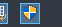
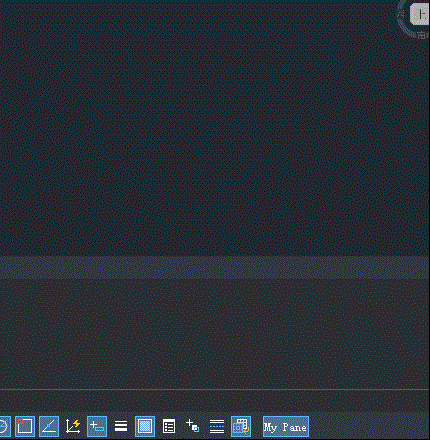
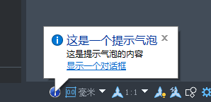
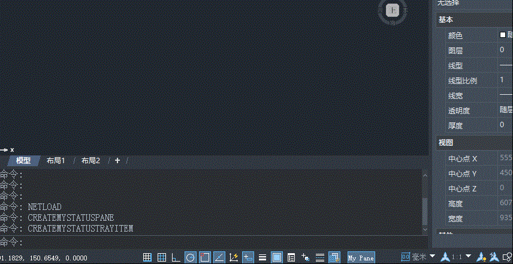

软件下方的状态栏展示了当前绘图空间的部分设置状态以及必要的信息，可以通过.Net接口添加自定义按钮到状态栏中，或在程序运行过程中通过气泡消息给与用户必要的提示信息。
自定义窗格
状态栏窗格是通过ZcPane类实现，可以用来展示某些设置的开关状态。

创建自定义窗格类
可以重载OnLButtonDown事件判断窗格是否被点击，设置PaneStyle的值以达到状态切换的效果。
class CMyPane : public ZcPane
{
public:
// 自定义点击事件
virtual void OnLButtonDown(UINT nFlags, CPoint point) {
if (nFlags == MK_LBUTTON) {
CString alertmsg;
if (this->GetStyle() == ZCSB_POPOUT) {
this->SetStyle(ZCSB_NORMAL);
alertmsg = "窗格样式切换为NORMAL";
}
else {
this->SetStyle(ZCSB_POPOUT);
alertmsg = "窗格样式切换为POPOUT";
}
zcedGetApplicationStatusBar()->Update();
zds_alert(alertmsg);
}
}
};
创建窗格
void addPane()
{
CMyPane* myPane = new CMyPane();
myPane->Enable(TRUE);
myPane->SetVisible(TRUE);
myPane->SetStyle(ZCSB_NORMAL);
myPane->SetText(L"测试窗格");
myPane->SetToolTipText(L"这是状态栏上的窗格");
// 不设置图标则显示文字
myPane->SetIcon(LoadIcon(NULL, IDI_SHIELD));
zcedGetApplicationStatusBar()->Add(myPane);
}
运行效果

提示气泡
需要先创建一个托盘对象TrayItem，通过该托盘对象显示提示气泡。

创建托盘图标和提示气泡
myTrayItem = new ZcTrayItem();
myTrayItem->SetToolTipText(L"这是一个托盘");
myTrayItem->SetIcon(LoadIcon(NULL, IDI_INFORMATION));
zcedGetApplicationStatusBar()->Add(myTrayItem);
ZcTrayItemBubbleWindowControl myBubble;
myBubble.SetTitle(L"这是一个提示气泡");
myBubble.SetText(L"这是提示气泡的内容");
myBubble.SetHyperText(L"显示一个对话框");
myTrayItem->ShowBubbleWindow(&myBubble);
设置提示气泡中超链接触发事件
可以向回调事件中添加点击超链接后要触发的流程。
...
myBubble.SetCallback([](void* pData, int nReturnCode) {
if (nReturnCode == ZcTrayItemBubbleWindowControl::BUBBLE_WINDOW_HYPERLINK_CLICK) {
zds_alert(L"你点击了气泡中的超链接。");
}
zcedGetApplicationStatusBar()->Remove(myTrayItem);
delete myTrayItem;
myTrayItem = nullptr;
});
...
运行效果
